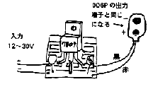

|
|
7809というICは入力端子に
12〜35Vの直流電圧を加えることによって9Vの出力を得る「定電圧レギュレータICです。 取り出せる電流は最大1Aです。
入出力端子と並列に入っている 0.01μFはノイズ吸収用のコンデンサです。
入力側の電源にハムが乗っているような場合は平滑コンデンサを入力側に取り付けてください。
|  | |
|
|
用途は、乾電池の006Pの代用です。
そのため、006P用のスナップが入っていますが、注意しなければならないことにこのスナップの接続があります。 それは出力のプラス側にスナップの
「黒」、マイナス側に「赤」を取り付けるという事です(*印)。 ちょっと反対のような気がしますが、このスナップが電池側の出力端子であるための措置で
すから注意して下さい。
|
|
|
|
「ひも付き006P」 使い終わった乾電池
006Pを分解して、ケースを痛めないように中身を出してから電池のスナップをきれいに取り外します。
回路のスナップ部を今はずした電池のスナップと交換してから内部にこの
#011を入れ、（ここでもプラス、マイナスを間違えないように）接着剤で固定します。
入力様のコードを底蓋に通して、ケースに装着し、これらも接着剤で固定して「ひも付き006P」の完成です。 スナップのプラスの電極に小さな穴が開い
ていますから、細い（小さい）
LEDをけずってその穴に通し接着剤で固定すると、通電時にLEDが光り、更に楽しいものになります。
その場合の回路は、第２図の様にしてください。
(1) 本回路とは直接関係がないかも知れませんが知っていて損のない情報です。
電圧レギュレータICの内部では、入力電圧と出力電圧の差に出力電流を掛けた電力が熱になります。 例えば入力電圧 14V、出力電流
0.5Aの場合、
(14-9)×0.5 ＝ 2.5 (W) …と、2.5Wの電力が熱となりICを暖めます。
このICにはサーマルシャットダウンといって温度が規定の値より上昇した場合、機能を停止させる安全回路が組み込まれていますが、なるべくこの機能を働
かせないためには、
■入力電圧は12V以上で、なるべく低いものに設定し、
■ICに放熱器を付ける。
という配慮をして下さい。
なお、サーマルシャットダウン回路が働いて出力が出なくなってしまった場合には、いったん電源を切って、ICの温度が冷めるのを待って再度電源を入れ直
して下さい。
(2)レギュレータICには、78M・・、78L・・、79・・、79M・・、79L・・等と言うシリーズがあります。 Mがつく
ものは最大電流規格が0.5A、Lがつくものは0.1A、頭の2文字が79のものはマイナス電源です。
Lのシリーズはピンコネクション(ピンの接続)がここで使った7809とは逆になりますから御注意ください。